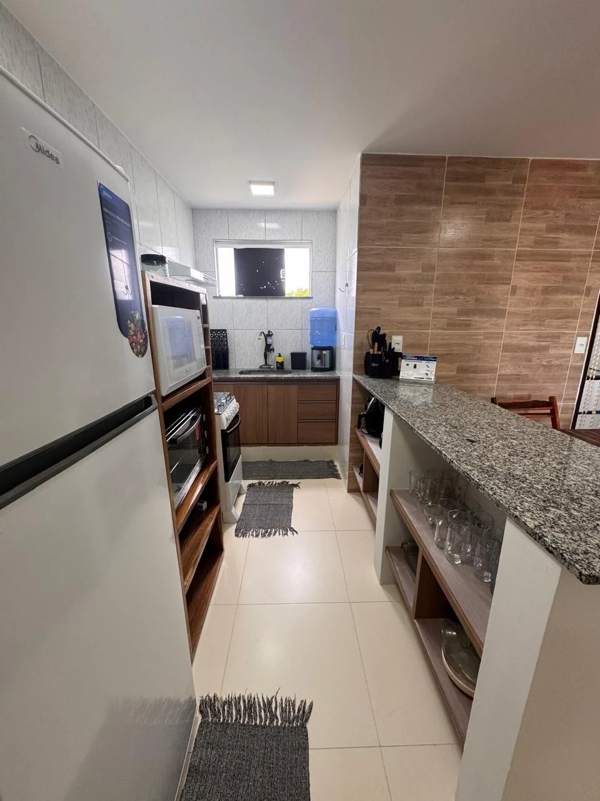
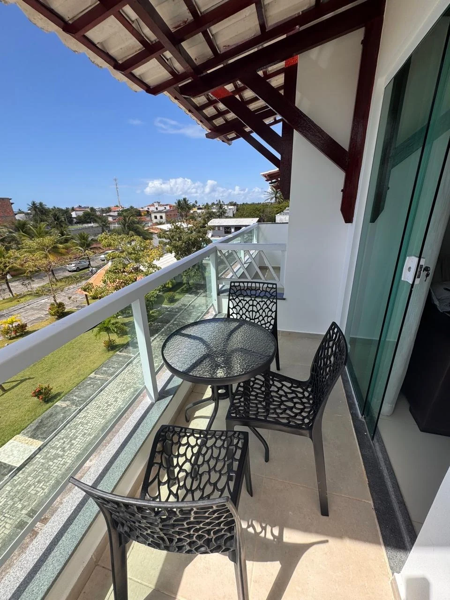

01 / O APARTAMENTOREFÚGIO CACHOEIRA
Chegue, abra as malas.
O resto já está aqui.
Um apartamento com mobília completa em condomínio fechado, pertinho da Praia de Guaibim. São dois quartos, sala com varanda e cozinha equipada para cuidar das refeições no seu próprio horário.
O espaço acomoda até 5 pessoas. Para dias em família, uma viagem com amigos ou só para passar mais tempo perto do mar.
Espaço inteiro, do seu jeito.O apartamento fica no 3º andar. Consulte as condições de acesso antes de reservar.
O que você encontra por aqui
Cozinha equipadaAr-condicionado nos quartosWi-FiPiscina compartilhadaEstacionamento no localMáquina de lavar Aceita pets
Aceita pets Condomínio com portaria
Condomínio com portaria
Conferir todas as comodidades no AirbnbAceita petsCondomínio com portaria02 / POR DENTROFOTOS DA ACOMODAÇÃO
Conheça os ambientes.


A cozinha
Equipada para a sua rotina.A sala
Para descansar depois da praia.

A varanda
Uma vista para aproveitar sem pressa.03 / A VIZINHANÇAGUAIBIM, VALENÇA — BA
Saia de casa.
Caminhe até o mar.

A praia fica a 200 metros do apartamento. Guaibim é o destino; Valença, no litoral da Bahia, é o município. O endereço exato e as orientações de chegada você combina com Luciana.
Ver a região no mapaAntes de vir.
Como consultar valores e datas?
Use o formulário para abrir uma conversa com Luciana no WhatsApp. Você também pode consultar e reservar nos anúncios do Booking e Airbnb. Valores e disponibilidade são confirmados no canal escolhido.
Posso levar meu pet?
O anúncio aceita pets. Combine as condições e regras com Luciana antes de confirmar a estadia.
Quais são os horários de entrada e saída?
Confirme os horários de check-in e checkout diretamente com Luciana ou na plataforma em que fizer a reserva.